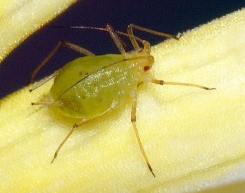

Image credit: Source and license information
Insect
Aphids
Aphids are small sap-feeding insects that can affect a range of vegetable and fruit crops.
Affected Crops
Tomato, Lettuce, Pepper, Cucumber, Strawberry
Key Facts
Scientific group: Aphidoidea
Pest type:Insect
Identifying Features
Information about the pest's appearance will appear here.
Affected Crops
Information about affected crops will appear here.
Signs and Damage
Information about common signs and crop damage will appear here.
Prevention and Control
Information about responsible prevention and control methods will appear here.
Sources
Research sources and further info will appear here.